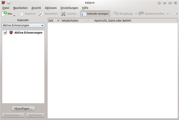
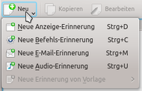
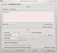
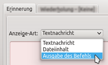
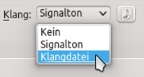
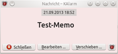
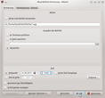
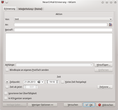
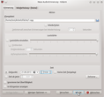
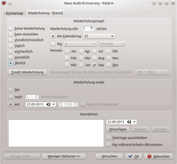

KAlarm
Dieser Artikel wurde für die folgenden Ubuntu-Versionen getestet:
Ubuntu 14.04 Trusty Tahr
Zum Verständnis dieses Artikels sind folgende Seiten hilfreich:
KAlarm  ist ein äußerst vielseitiges Programm zur Planung von zeitgesteuerten Ereignissen auf dem Computer. Es können beispielsweise zur automatischen Terminerinnerung zeitgesteuert Textinformationen auf dem Bildschirm angezeigt, akustische Alarmsignale ausgegeben, ein zeitgesteuerter Email-Versand oder die Ausführung eines Computerbefehls programmiert werden. Das für die KDE-Arbeitsumgebung konzipierte, aber natürlich auch unter anderen grafischen Oberflächen verwendbare Programm wird unter der GNU General Public License (GPL) freigegeben.
ist ein äußerst vielseitiges Programm zur Planung von zeitgesteuerten Ereignissen auf dem Computer. Es können beispielsweise zur automatischen Terminerinnerung zeitgesteuert Textinformationen auf dem Bildschirm angezeigt, akustische Alarmsignale ausgegeben, ein zeitgesteuerter Email-Versand oder die Ausführung eines Computerbefehls programmiert werden. Das für die KDE-Arbeitsumgebung konzipierte, aber natürlich auch unter anderen grafischen Oberflächen verwendbare Programm wird unter der GNU General Public License (GPL) freigegeben.
KAlarm bietet folgende Funktionen:
Benutzerdefinierte Text- oder Bildausgabe, auch mit akustischem Alarm verknüpfbar
Feste Alarmzeit programmierbar, täglich, wöchentlich, monatlich oder jährlich
Erinnerung bei Anmeldung am Rechner möglich
Wiederholungs- und Vorwarnfunktion
Wecker- oder Countdown-Funktion
Zeitgesteuerter Email-Versand
Zeitgesteuerte Befehlsausführung
und vieles mehr.
Installation¶
|  |
| KAlarm-Hauptfenster mit eingeblendetem Kalender |
Die Installation [1] erfolgt über das Paket
kalarm
 mit apturl
mit apturl
Paketliste zum Kopieren:
sudo apt-get install kalarm
sudo aptitude install kalarm
Nach erfolgreicher Installation findet man das Programm unter KDE im Menüpunkt "Dienstprogramme -> KTimer (Startet den Zähler)".
Ansicht¶
Über das Menü "Ansicht" können die im Hauptfenster ein- oder auszublendenden Elemente festgelegt werden. Das Programm kann z.B.
die "Zeiten bis zur nächsten Erinnerung anzeigen" (alternativ Tastenkürzel Strg + I ),
"Abgelaufene Erinnerungen anzeigen" (Tastenkürzel Strg + P ),
eine Seitenleiste einblenden ("Kalender anzeigen")
und mehr.
Bedienung¶

Alarmverwaltung¶
Um einen Termin hinzuzufügen, klickt man im Hauptfenster auf die Schaltfläche "Neu" oder geht im Menü auf "Datei -> Neu". Dort können verschiedene Alarmmöglichkeiten ausgewählt werden:
Ausgabe eines Erinnerungstextes¶
Der Menüpunkt "Neue Anzeige-Erinnerung" (alternativ Strg + D ) öffnet ein Einstellungsfenster, welches die Eingabe eines Erinnerungstexts erlaubt. Dieser wird in das rosafarbene Feld eingetippt, wobei Schriftart & Farbe über die gleichnamige Schaltfläche ausgewählt werden können.
Alternativ lässt sich der Inhalt einer Datei oder die Ausgabe eines Computerbefehls als Alarmereignis festlegen.
Des weiteren bieten sich folgende Einstellungsmöglichkeiten:
Beim Auswahlfeld "Klang" kann ferner festgelegt werden, ob KAlarm stumm warnen soll oder mittels eines Warntons oder einer frei definierbaren Audiodatei die Warnung verstärken soll.
Im unteren Fensterbereich lassen sich Datum und Uhrzeit festlegen, zu welchen der Text erscheinen soll. Alternativ kann, ähnlich wie bei einer Eieruhr, über den Punkt "Zeit ab jetzt" ein Countdown in Minuten eingegeben werden.
Als weitere Optionen lässt sich beispielsweise eine Vorabwarnung ("Erinnerung ... im Voraus"), eine Wiederholungserinnerung ("Erinnerung ... anschließend"), eine Bestätigung der Zurkenntnisnahme des Alarms durch den Benutzer und vieles mehr einstellen.
Der programmierte Erinnerungstext wird zum gewählten Zeitpunkt in einem aufploppenden Fenster auf dem Bildschirm angezeigt.
|  |
| Anzeige-Erinnerung Einrichtung |
|  |
| Anzeige-Erinnerung Anzeige-Art |
|  |
| Anzeige-Erinnerung Klang |
|  |
| Anzeige-Erinnerung Ausgabe |
Ausführung eines Befehls¶
Statt einer Textnachricht kann auch ein Befehl, wie z.B. der Start eines bestimmten Programms, zum Alarmzeitpunkt ausgeführt werden. Dies wird im Menüpunkt "Neue Befehls-Erinnerung" ( Strg + C ) festgelegt.
Erinnerungs-Email¶
Das Programm eignet sich auch zum zeitgesteuerten Emailversand, welcher über den Punkt "Neue E-Mail-Erinnerung" ( Strg + M ) programmiert werden kann.
Akustischer Alarm¶
Für den Fall, dass lediglich ein Audiosignal als Alarmereignis ertönen soll (z.B. als Wecksignal), kann auf den Menüpunkt "Neue Audio-Erinnerung" ( Strg + U ) zurückgegriffen werden. In diesem Einstellungsfenster lässt sich direkt auf eine Klangdatei verweisen und verschiedene Einstellungen wie Wiederholung, Lautstärken-Einstellung und Einblende-Effekt festlegen.
|  |
| Befehls-Erinnerung |
|  |
| E-Mail-Erinnerung |
|  |
| Audio-Erinnerung |

Wiederholung¶
In den Einstellungsfenstern der verschiedenen beschriebenen Alarm-Arten befindet sich jeweils ein Karteikartenreiter "Wiederholung". Über diesen kann eine Alarmwiederholung programmiert werden, so dass der erstellte Alarm jährlich, monatlich, wöchentlich, täglich, stündlich oder bei jedem Anmelden am Computer ausgegeben wird.
Je nach Art der Wiederholung lassen sich Feineinstellungen wie das Verhalten in Schaltjahren, der Ausschluss von Feiertagen, Zusatz-Wiederholungen und vieles mehr vornehmen. Dies erlaubt eine äußerst differenzierte Alarmverwaltung.
Tastenkürzel¶
Das Programm lässt sich auch hervorragend über Tastenkürzel steuern. Über Menü "Einstellungen -> Kurzbefehle festlegen" lässt sich auf das Einstellungsfenster für die Tastenkombinationen zugreifen, wobei in der Standardeinstellung nur wenige Tastenkürzel vergeben sind, letztlich sich aber praktisch jeder Programmfunktion ein Tastenkürzel zuweisen lässt.
Einstellungen¶
Die allgemeinen Programmeinstellungen finden sich unter "Einstellungen -> KAlarm einrichten". Hier können globale Programmverhaltensweisen wie der automatische Programmstart beim Anmelden am Computer, die zu verwendende Zeitzone, die Definition der persönlichen Arbeitszeit, die grundlegenden Email-Einstellungen und vieles mehr festgelegt werden.
Handbuch¶
Für über diese Kurzdarstellung hinausgehende Verwendungsmöglichkeiten und zur tiefere Einarbeitung kann das von den Entwicklern beigelegte Handbuch recht hilfreich sein, auf welches über den Menüpunkt "Hilfe -> Handbuch zu KAlarm" oder das Tastenkürzel F1 Zugriff erlangt werden kann.
 Übersichtsseite
Übersichtsseite- Erstellt mit Inyoka
-
 2004 – 2017 ubuntuusers.de • Einige Rechte vorbehalten
2004 – 2017 ubuntuusers.de • Einige Rechte vorbehalten
Lizenz • Kontakt • Datenschutz • Impressum • Serverstatus -
Serverhousing gespendet von